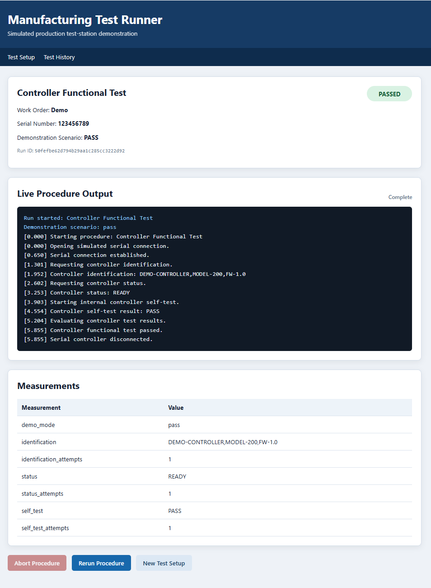

Manufacturing Test Automation
Manufacturing Test Runner
A Flask-based manufacturing test application with simulated instruments, live server-sent event output, abort handling, rerun support, persistent SQLite history, and automated tests.
- Live background procedure execution
- PASS, FAIL, retry, timeout, and abort scenarios
- Simulated power, frequency, and serial equipment
- Searchable test-history database
- 70 automated tests
Python
Flask
SQLite
JavaScript
Pytest